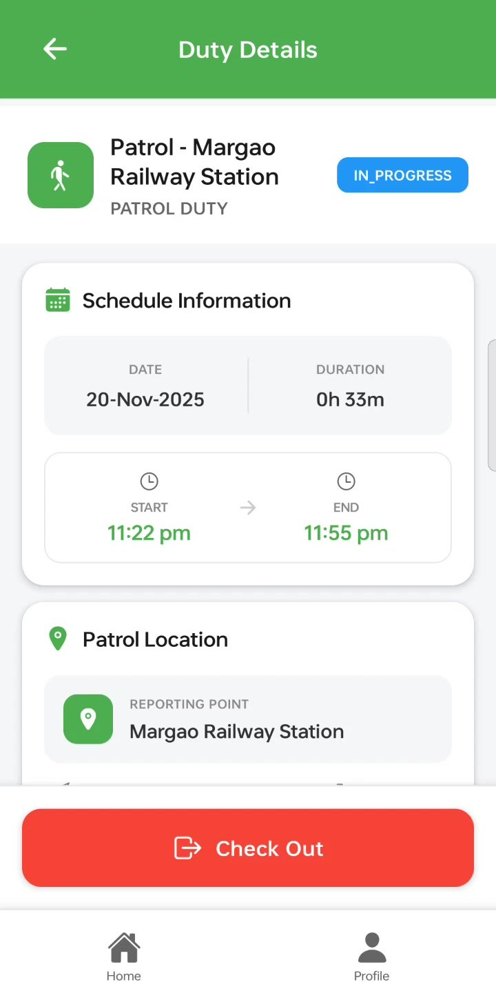
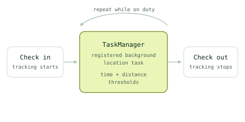
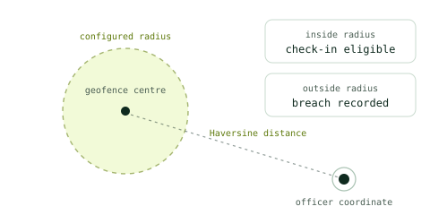
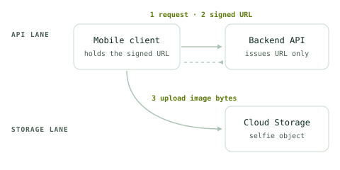

A smart patrolling verification system designed to help verify field-officer presence and
monitor patrol activity through OTP authentication, facial verification, geofencing and
background location tracking.
Verifying field patrol activity is difficult when attendance records and manual reporting
are the primary sources of confirmation.
A check-in alone does not establish whether an officer was physically present at the
assigned location or whether patrol activity continued after check-in.
The system needed to connect three things:
Identity
Is the officer the person assigned to the duty?
Location
Is the officer within the designated geofence?
Activity
Is patrol movement being recorded during the assigned shift?
The challenge was to bring these verification steps into one connected workflow for field
officers and supervisors.
Connecting identity, location and patrol activity
Night Vigil connects a mobile patrol workflow to a backend verification and monitoring
system.
An officer authenticates using an OTP, views their assigned duty and location boundary,
completes a selfie-based identity check, and checks in within the assigned geofence.
Once the patrol begins, the mobile application records location updates in the background.
The backend evaluates geofence compliance and stores both the latest location and the
historical patrol trail.
This creates a structured record of identity verification, check-in and patrol movement
rather than relying on a single attendance event.
Assigned duty, reporting point and boundary

Patrol in progress, tracking active
How it works
The officer's path through the application, from login to checkout.
Authenticate
Officer enters their phone number and verifies access using an OTP.
View assigned duty
The application retrieves the assigned patrol details, schedule and geofence boundary.
Verify identity
Officer captures a selfie. The backend obtains a time-limited upload URL, stores the image in cloud storage and sends the relevant images to an external face-matching service.
Verify location
The backend calculates the officer's distance from the assigned geofence using the Haversine formula and evaluates check-in eligibility.
Track patrol
The mobile application records background location updates at a configured interval of approximately two minutes or 50 metres of movement.
Check out
The officer checks out to stop background tracking.
How the system is connected
Four groups: the mobile application, the Flask backend, external services and the database.
Click the diagram to zoom
Check-ins and location updates reach the Flask API, which evaluates the geofence and writes
to MySQL. Selfie images take a different path: the API issues a signed URL and the phone
uploads the file straight to Cloud Storage.
Important engineering decisions
Three choices that shaped how the build behaves in the field.
Background location tracking
Patrol activity does not stop when the phone screen turns off, so tracking cannot depend
on the app being open. The application uses Expo TaskManager to run a configured
background location task. Updates are triggered using time and distance thresholds.
Tracking is connected to the patrol check-in and check-out lifecycle, so it starts with
the duty and stops when the officer checks out.

Tracking runs for the length of the duty
Geofence verification
The backend calculates the distance between the incoming GPS coordinate and the
configured geofence centre using the Haversine formula. It evaluates the boundary and
records breach events when the configured radius is exceeded. Verification lives on the
server rather than in the app, so the check does not rely on the client deciding it is
in the right place.

Distance is evaluated server-side
Direct image uploads
The backend generates a time-limited Google Cloud Storage signed URL. The mobile client
uploads the image directly to storage rather than sending the image file through the
backend API. The API handles only the URL request and the image reference, which keeps
the request payload small and avoids routing full-size photos through Flask.

The image never passes through the API
Separating live location from patrol history
The system keeps three location records with different responsibilities.
locationsUNO
Stores historical patrol coordinates.
locationsDOS
Maintains the latest location for an officer and duty.
locationsTROS
Stores geofence breach events and distance outside the boundary.
Click the diagram to zoom
The monitoring system needs to retrieve an officer's latest location while also retaining
the full historical patrol trail.
Keeping these responsibilities separate avoids having to derive the latest position from
the entire historical dataset every time the monitoring interface needs it.
This creates separate records for historical analysis, current monitoring and breach
auditing.
Technologies used
Grouped by what each part of the build needed.
Mobile
React Native
Expo
TypeScript
Backend
Python
Flask
REST APIs
Database
MySQL
PyMySQL
Authentication
OTP
PyJWT
Location
Expo Location
Expo TaskManager
Haversine
Cloud storage
Google Cloud Storage signed URLs
Integrations
SMS / RCS gateway
External Face Match API
What I learned and what I would improve
The constraints that shaped the build, and the gaps I would close next.
Separating current location from historical data
The monitoring use case needed quick access to the latest officer location while retaining
the full patrol trail. I separated current-state updates from historical coordinate
storage.
Tracking outside the foreground
Patrol tracking needed to continue beyond a normal open-screen workflow. I used Expo
TaskManager to register background location execution with configured time and distance
thresholds.
Handling image uploads efficiently
Selfie images did not need to pass through the API server. I used time-limited signed
upload URLs to send images directly to Google Cloud Storage.
What I would improve next
Add reliable offline buffering and retry handling for GPS updates.
Complete and test breach push notifications end-to-end.
Strengthen endpoint-level authorization and add automated security tests.
Add mobile test coverage, CI/CD and operational monitoring.
Validate geofence behaviour against GPS drift, poor connectivity and device background restrictions.
Results and achievement
What the hackathon produced. No performance or usage numbers are claimed.
Winner — Goa Police Hackathon 2025
Night Vigil was built during the 48-hour Goa Police Hackathon and judged first place.
The final build connected mobile OTP authentication, selfie-based identity verification,
geofencing and background patrol tracking with a Flask backend and MySQL.
Winner
Team of 4
48-hour build
Mobile + backend + database connected
Building systems that connect real-world activity with reliable software.
Night Vigil is the kind of problem I like working on: a field workflow, a backend that
verifies what the workflow claims, and a record that a supervisor can inspect later.